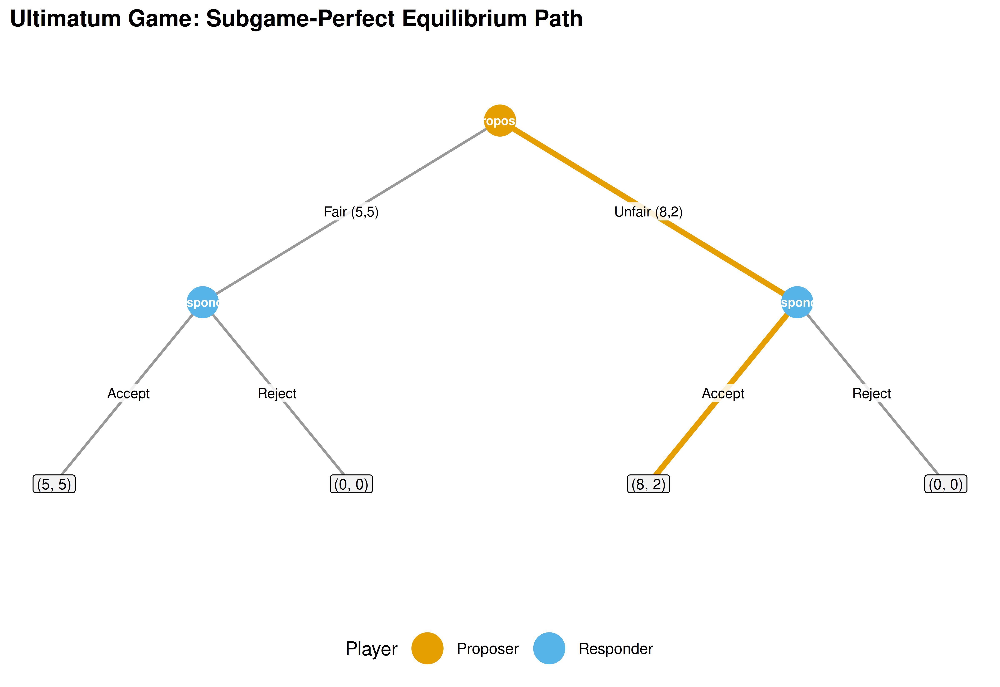
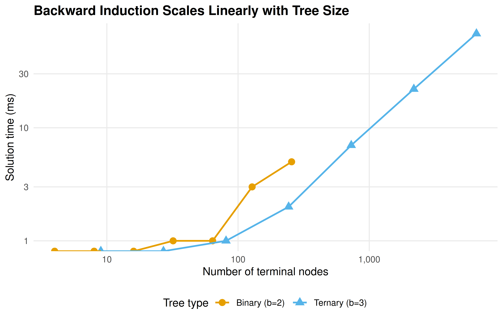

13 The gtree Package
Extensive-form games and backward induction with the gtree package’s domain-specific language — plus a from-scratch pure-R implementation for solving game trees when external solvers are unavailable.
Learning objectives
- Describe the gtree package’s domain-specific language (DSL) for specifying extensive-form games as nested stage structures.
- Explain how gtree interfaces with Gambit command-line solvers to compute Nash equilibria of sequential games.
- Build a pure-R game tree representation using nested lists and solve it via backward induction.
- Apply backward induction to the ultimatum game and identify the subgame-perfect equilibrium.
- Visualize a game tree with the equilibrium path highlighted.
13.1 Motivation
Many strategic interactions unfold sequentially: a firm enters a market and the incumbent decides whether to fight or accommodate; a legislature passes a bill and the executive signs or vetoes it; a buyer makes an offer and the seller accepts or rejects. These situations are naturally modeled as extensive-form games — tree structures where nodes represent decisions and edges represent actions.
In 6 we introduced game trees and backward induction by hand. That approach works for textbook examples, but as games grow in size (more rounds, more players, more actions per node), manual tree construction becomes error-prone. The gtree package, developed by Sebastian Kranz, addresses this gap by providing a compact domain-specific language (DSL) for defining extensive-form games. It constructs the game tree internally and, when the Gambit solver suite is installed, calls industrial-strength algorithms to find equilibria.
However, gtree depends on external binaries (Gambit) and is not always available in every R environment. This chapter therefore pursues a dual strategy: we describe gtree’s design and DSL so that readers can evaluate it for their own work, and we implement a complete game tree engine from scratch in pure R. The engine represents trees as nested lists, solves them by backward induction, and produces publication-quality visualizations of the equilibrium path — all without any dependencies beyond base R and the tidyverse.
13.2 Theory
13.2.1 The gtree DSL
The gtree package models an extensive-form game as a sequence of stages. Each stage specifies:
- Who moves: a named player or “nature” (for chance nodes).
- What actions are available: possibly conditional on variables set in earlier stages.
- What payoffs result: formulas that reference earlier actions.
A typical gtree specification looks like this (pseudocode, since gtree is not installed):
game <- new_game(
players = c("Proposer", "Responder"),
stages = list(
stage("offer",
player = "Proposer",
actions = list(action("split", c("Fair", "Unfair")))
),
stage("response",
player = "Responder",
actions = list(action("answer", c("Accept", "Reject")))
)
),
payoffs = list(
payoff("Proposer", ~ case_when(
answer == "Reject" ~ 0,
split == "Fair" ~ 5,
TRUE ~ 8)),
payoff("Responder", ~ case_when(
answer == "Reject" ~ 0,
split == "Fair" ~ 5,
TRUE ~ 2))
)
)The key design insight is that condition clauses allow stages to be contingent on prior choices, so the analyst describes the game linearly even though the underlying tree branches. The package internally expands this specification into a full game tree with correctly linked information sets.
13.2.2 Gambit integration
Once a game is defined, gtree can export it to Gambit’s .efg (extensive-form game) format and invoke Gambit’s command-line solvers:
-
gambit-enumpureenumerates all pure-strategy Nash equilibria. -
gambit-enummixedenumerates all mixed-strategy equilibria for two-player games. -
gambit-lcpuses the Lemke–Howson algorithm for bimatrix games (see 15). -
gambit-logitcomputes quantal response equilibria.
This makes gtree a convenient R front-end for industrial-strength solvers without requiring the analyst to learn Gambit’s file format or command-line interface.
13.2.3 Backward induction for perfect-information games
For games of perfect information — where every information set is a singleton — backward induction provides an exact solution. The algorithm works from the terminal nodes back to the root: at each decision node, the moving player selects the action that maximizes their own payoff, given that all subsequent players will do the same.
Definition: Subgame-Perfect Equilibrium (SPE)
A strategy profile is a subgame-perfect equilibrium if it constitutes a Nash equilibrium in every subgame of the original game. For finite games of perfect information, backward induction yields the unique SPE (when payoffs at terminal nodes are distinct).
The time complexity of backward induction is \(O(n)\) where \(n\) is the number of nodes in the tree, since each node is visited exactly once. For a tree with branching factor \(b\) and depth \(d\), the total number of nodes is:
\[\begin{equation} n = \frac{b^{d+1} - 1}{b - 1} \tag{13.1} \end{equation}\]
This exponential growth in tree size is the fundamental computational challenge — but backward induction remains efficient because it processes each node exactly once.
13.2.4 The ultimatum game
The ultimatum game is a canonical example in behavioral economics. A Proposer has a sum of money (say, 10 units) and offers a split to a Responder. The Responder either Accepts (both receive their shares) or Rejects (both receive nothing). Despite the intuition that any positive offer should be accepted, experimental evidence consistently shows that offers below 20–30% are frequently rejected.
The game-theoretic prediction under backward induction is stark: the Responder should accept any positive offer (since something is better than nothing), and therefore the Proposer should offer the minimum possible amount. This divergence between theory and behavior makes the ultimatum game a rich pedagogical example.
13.3 Implementation in R
13.3.1 A flexible game tree representation
We represent game trees as nested lists. Each node is either a decision node (with a player and children) or a terminal node (with payoffs for all players).
# A terminal node stores final payoffs for all players
make_terminal <- function(payoffs) {
list(type = "terminal", payoffs = payoffs)
}
# A decision node stores who moves and a named list of children
make_decision <- function(player, children) {
list(type = "decision", player = player, children = children)
}
# Backward induction: recursively solve from leaves to root
solve_by_backward_induction <- function(node) {
if (node$type == "terminal") {
return(list(payoffs = node$payoffs, path = list()))
}
# Recursively solve all children
solutions <- lapply(node$children, solve_by_backward_induction)
# Current player picks child maximizing their own payoff
player <- node$player
child_payoffs <- sapply(solutions, function(s) s$payoffs[player])
best_idx <- which.max(child_payoffs)
best_action <- names(node$children)[best_idx]
best_solution <- solutions[[best_idx]]
list(
payoffs = best_solution$payoffs,
path = c(
list(list(player = player, action = best_action)),
best_solution$path
)
)
}13.3.2 Building the ultimatum game tree
# Ultimatum game: Proposer offers Fair (5,5) or Unfair (8,2)
# Responder Accepts or Rejects each offer
ultimatum_game <- make_decision(1, list(
"Fair (5,5)" = make_decision(2, list(
"Accept" = make_terminal(c(5, 5)),
"Reject" = make_terminal(c(0, 0))
)),
"Unfair (8,2)" = make_decision(2, list(
"Accept" = make_terminal(c(8, 2)),
"Reject" = make_terminal(c(0, 0))
))
))
result <- solve_by_backward_induction(ultimatum_game)
cat("Subgame-perfect equilibrium payoffs:", result$payoffs, "\n\n")#> Subgame-perfect equilibrium payoffs: 8 2
cat("SPE path:\n")#> SPE path:
for (step in result$path) {
player_label <- c("Proposer", "Responder")[step$player]
cat(glue(" {player_label} chooses: {step$action}"), "\n")
}#> Proposer chooses: Unfair (8,2)
#> Responder chooses: AcceptAs predicted by the theory, backward induction selects the Unfair offer (since 8 > 5 for the Proposer) and the Responder Accepts (since 2 > 0). The SPE payoffs are (8, 2).
13.3.3 Visualizing the game tree
To build a publication-quality game tree figure, we first flatten the tree into a data frame of nodes and edges, then use ggplot2 to render it with the equilibrium path highlighted.
# Flatten tree into node and edge data frames for plotting
flatten_tree <- function(node, node_id = 1, depth = 0, x_center = 0,
x_spread = 2, eq_path = NULL) {
nodes <- tibble()
edges <- tibble()
if (node$type == "terminal") {
payoff_label <- paste0("(", paste(node$payoffs, collapse = ", "), ")")
nodes <- tibble(
id = node_id, depth = depth, x = x_center,
label = payoff_label, node_type = "terminal", player = NA_integer_
)
return(list(nodes = nodes, edges = edges, next_id = node_id + 1))
}
# Decision node
player_labels <- c("Proposer", "Responder")
nodes <- tibble(
id = node_id, depth = depth, x = x_center,
label = player_labels[node$player], node_type = "decision",
player = node$player
)
n_children <- length(node$children)
child_positions <- seq(-x_spread / 2, x_spread / 2, length.out = n_children)
next_id <- node_id + 1
for (i in seq_along(node$children)) {
action_name <- names(node$children)[i]
child_node <- node$children[[i]]
# Check if this edge is on the equilibrium path
on_eq_path <- FALSE
if (!is.null(eq_path) && length(eq_path) > 0) {
step <- eq_path[[1]]
if (step$player == node$player && step$action == action_name) {
on_eq_path <- TRUE
}
}
child_result <- flatten_tree(
child_node, next_id, depth + 1,
x_center + child_positions[i], x_spread / 2,
eq_path = if (on_eq_path && length(eq_path) > 1) eq_path[-1] else
if (on_eq_path) list() else NULL
)
new_edge <- tibble(
from_id = node_id, to_id = next_id,
from_x = x_center, from_y = -depth,
to_x = x_center + child_positions[i], to_y = -(depth + 1),
action = action_name, on_eq_path = on_eq_path
)
edges <- bind_rows(edges, new_edge, child_result$edges)
nodes <- bind_rows(nodes, child_result$nodes)
next_id <- child_result$next_id
}
list(nodes = nodes, edges = edges, next_id = next_id)
}
tree_data <- flatten_tree(
ultimatum_game, eq_path = result$path, x_spread = 4
)
nodes_df <- tree_data$nodes |>
mutate(y = -depth)
edges_df <- tree_data$edges
p_tree <- ggplot() +
# Draw edges (non-equilibrium first, then equilibrium on top)
geom_segment(
data = edges_df |> filter(!on_eq_path),
aes(x = from_x, y = from_y, xend = to_x, yend = to_y),
colour = "grey60", linewidth = 0.7
) +
geom_segment(
data = edges_df |> filter(on_eq_path),
aes(x = from_x, y = from_y, xend = to_x, yend = to_y),
colour = okabe_ito[1], linewidth = 1.5
) +
# Action labels on edges
geom_label(
data = edges_df,
aes(x = (from_x + to_x) / 2, y = (from_y + to_y) / 2, label = action),
size = 2.8, label.size = 0, fill = "white", alpha = 0.85
) +
# Decision nodes
geom_point(
data = nodes_df |> filter(node_type == "decision"),
aes(x = x, y = y, colour = factor(player)),
size = 8
) +
# Decision node labels
geom_text(
data = nodes_df |> filter(node_type == "decision"),
aes(x = x, y = y, label = label),
size = 2.5, colour = "white", fontface = "bold"
) +
# Terminal node labels (payoffs)
geom_label(
data = nodes_df |> filter(node_type == "terminal"),
aes(x = x, y = y, label = label),
size = 3, fill = "grey95", label.padding = unit(0.2, "lines")
) +
scale_colour_manual(
values = c("1" = okabe_ito[1], "2" = okabe_ito[2]),
labels = c("Proposer", "Responder"),
name = "Player"
) +
coord_cartesian(
xlim = c(-3, 3),
ylim = c(-2.5, 0.3)
) +
labs(title = "Ultimatum Game: Subgame-Perfect Equilibrium Path") +
theme_publication() +
theme(
axis.text = element_blank(),
axis.title = element_blank(),
axis.ticks = element_blank(),
panel.grid = element_blank()
)
p_tree
Figure 13.1: Game tree for the ultimatum game. The Proposer (orange node) chooses between a Fair and Unfair split; the Responder (blue nodes) then Accepts or Rejects. The bold orange path marks the subgame-perfect equilibrium: Proposer offers Unfair (8, 2) and Responder Accepts.
save_pub_fig(p_tree, "ultimatum-game-tree", width = 8, height = 5.5)The figure makes the structure of the SPE transparent. At each of the Responder’s decision nodes, Accepting yields a positive payoff while Rejecting yields zero — so the Responder always Accepts. Knowing this, the Proposer selects the split that maximizes their own share, choosing the Unfair offer.
13.4 Worked example
Let us extend the ultimatum game to allow three possible offers and solve it step by step.
Setup. The Proposer has 10 units and can offer three splits:
| Offer | Proposer receives | Responder receives |
|---|---|---|
| Generous | 4 | 6 |
| Fair | 5 | 5 |
| Greedy | 9 | 1 |
The Responder observes the offer and chooses Accept or Reject. If Rejected, both receive 0.
# Three-offer ultimatum game
ultimatum_3 <- make_decision(1, list(
"Generous (4,6)" = make_decision(2, list(
"Accept" = make_terminal(c(4, 6)),
"Reject" = make_terminal(c(0, 0))
)),
"Fair (5,5)" = make_decision(2, list(
"Accept" = make_terminal(c(5, 5)),
"Reject" = make_terminal(c(0, 0))
)),
"Greedy (9,1)" = make_decision(2, list(
"Accept" = make_terminal(c(9, 1)),
"Reject" = make_terminal(c(0, 0))
))
))
result_3 <- solve_by_backward_induction(ultimatum_3)
cat("SPE payoffs:", result_3$payoffs, "\n\n")#> SPE payoffs: 9 1
cat("SPE path:\n")#> SPE path:
for (step in result_3$path) {
player_label <- c("Proposer", "Responder")[step$player]
cat(glue(" {player_label} chooses: {step$action}"), "\n")
}#> Proposer chooses: Greedy (9,1)
#> Responder chooses: AcceptStep-by-step reasoning:
Responder’s subgames. At each of the three decision nodes, the Responder compares Accept vs. Reject. Since Accepting always yields a positive payoff (6, 5, or 1) while Rejecting yields 0, the Responder Accepts every offer.
Proposer’s choice. Knowing the Responder will Accept any offer, the Proposer compares their own payoffs: 4 (Generous), 5 (Fair), or 9 (Greedy). The Proposer selects the Greedy offer.
SPE outcome. The Proposer offers (9, 1) and the Responder Accepts, yielding equilibrium payoffs \((9, 1)\).
This result highlights the starkness of the game-theoretic prediction: rational, self-interested players reach an extreme outcome. The large experimental literature on ultimatum games shows that this prediction fails descriptively — Responders frequently reject low offers and Proposers often offer 40–50% — which motivates models incorporating fairness preferences, spite, and social norms.
13.4.1 Scaling analysis
How does backward induction perform as the game tree grows? We generate random trees of varying depth and branching factor and record solution times.
# Generate random perfect-information game trees
generate_random_tree <- function(depth, branching, n_players = 2) {
if (depth == 0) {
return(make_terminal(runif(n_players, -5, 5)))
}
player <- ((depth - 1) %% n_players) + 1
children <- setNames(
lapply(seq_len(branching), function(i) {
generate_random_tree(depth - 1, branching, n_players)
}),
paste0("A", seq_len(branching))
)
make_decision(player, children)
}
configs <- expand.grid(depth = 2:8, branching = c(2, 3)) |>
as_tibble() |>
mutate(n_terminals = branching^depth, time_ms = NA_real_)
for (i in seq_len(nrow(configs))) {
tree <- generate_random_tree(configs$depth[i], configs$branching[i])
elapsed <- system.time(solve_by_backward_induction(tree))["elapsed"]
configs$time_ms[i] <- elapsed * 1000
}
configs |>
mutate(branching = factor(branching)) |>
select(depth, branching, n_terminals, time_ms) |>
gt() |>
tab_header(title = "Backward Induction: Solution Time by Tree Size") |>
fmt_number(columns = time_ms, decimals = 2) |>
fmt_number(columns = n_terminals, use_seps = TRUE, decimals = 0) |>
cols_label(
depth = "Depth", branching = "Branching",
n_terminals = "Terminal Nodes", time_ms = "Time (ms)"
)| Backward Induction: Solution Time by Tree Size | |||
| Depth | Branching | Terminal Nodes | Time (ms) |
|---|---|---|---|
| 2 | 2 | 4 | 0.00 |
| 3 | 2 | 8 | 0.00 |
| 4 | 2 | 16 | 0.00 |
| 5 | 2 | 32 | 1.00 |
| 6 | 2 | 64 | 1.00 |
| 7 | 2 | 128 | 3.00 |
| 8 | 2 | 256 | 5.00 |
| 2 | 3 | 9 | 0.00 |
| 3 | 3 | 27 | 0.00 |
| 4 | 3 | 81 | 1.00 |
| 5 | 3 | 243 | 2.00 |
| 6 | 3 | 729 | 7.00 |
| 7 | 3 | 2,187 | 22.00 |
| 8 | 3 | 6,561 | 68.00 |
p_scaling <- configs |>
mutate(branching = factor(branching,
labels = c("Binary (b=2)", "Ternary (b=3)")
)) |>
ggplot(aes(x = n_terminals, y = time_ms,
colour = branching, shape = branching)) +
geom_point(size = 3) +
geom_line(linewidth = 0.8) +
scale_colour_manual(values = okabe_ito[c(1, 2)]) +
scale_x_log10(name = "Number of terminal nodes",
labels = label_comma()) +
scale_y_log10(name = "Solution time (ms)") +
labs(
title = "Backward Induction Scales Linearly with Tree Size",
colour = "Tree type", shape = "Tree type"
) +
theme_publication()
p_scaling
Figure 13.2: Backward induction solution time as a function of the number of terminal nodes. Both binary and ternary trees show approximately linear growth, confirming the O(n) complexity of the algorithm.
save_pub_fig(p_scaling, "gtree-scaling-analysis", width = 7, height = 4.5)The log-log plot confirms the expected linear relationship between tree size and computation time. Binary trees with depth 8 have \(2^8 = 256\) terminal nodes and solve in well under a millisecond. Even ternary trees at depth 8 (\(3^8 = 6{,}561\) terminals) remain fast. The real computational challenge arises with imperfect information, where backward induction no longer applies and one must resort to solvers like Gambit.
13.5 Extensions
The game tree engine and backward induction solver developed here connect to several other topics in this book:
- Extensive-form games (6) provides the theoretical foundation for the tree representation used here. The present chapter adds the computational machinery to solve those trees at scale.
- Custom solvers (15) implements support enumeration and other algorithms for normal-form games. For extensive-form games with imperfect information, converting to normal form and applying these solvers is a standard approach.
- nashpy via reticulate (14) offers another route for computing mixed-strategy equilibria after normal-form conversion.
- Bargaining (35) extends the ultimatum game to multi-round alternating offers, where the discount factor determines the equilibrium split. The Rubinstein model in that chapter can be solved directly with the backward induction engine developed here.
For the foundational theory of extensive-form games and backward induction, see Neumann & Morgenstern (1944) and Osborne (2004) (Chapters 5–7). The existence of subgame-perfect equilibria in finite games of perfect information is guaranteed by Zermelo’s theorem, which predates Nash (1950) but complements the Nash equilibrium framework. For comprehensive coverage of the Gambit solvers, see the Gambit documentation and Shoham & Leyton-Brown (2009) (Chapter 4). The gtree package vignettes provide tutorials for games with simultaneous moves within stages, nature nodes, and parameterized game families.
Exercises
Centipede game. Encode a six-round centipede game where two players alternate. At each node, the current player can Stop (receiving \(2k\) while the other receives \(0\), where \(k\) is the round number) or Continue. If both Continue for all six rounds, each receives 7. Solve by backward induction. Does the SPE match experimental evidence on centipede games?
Discount factor sensitivity. Modify the ultimatum game so that rejection leads to a second round (with both players’ payoffs discounted by \(\delta\)) where the Responder becomes the Proposer. Solve for \(\delta \in \{0.5, 0.7, 0.9, 0.99\}\) and plot the Proposer’s equilibrium payoff as a function of \(\delta\). How does patience affect the first mover’s advantage?
Visualizing larger trees. Extend the
flatten_tree()function to handle a three-round bargaining game (alternating Proposers, two actions per round, acceptance or rejection at each stage). Generate the game tree visualization with the equilibrium path highlighted. What modifications to the layout algorithm are needed to prevent node overlap at deeper levels?
Solutions appear in D.